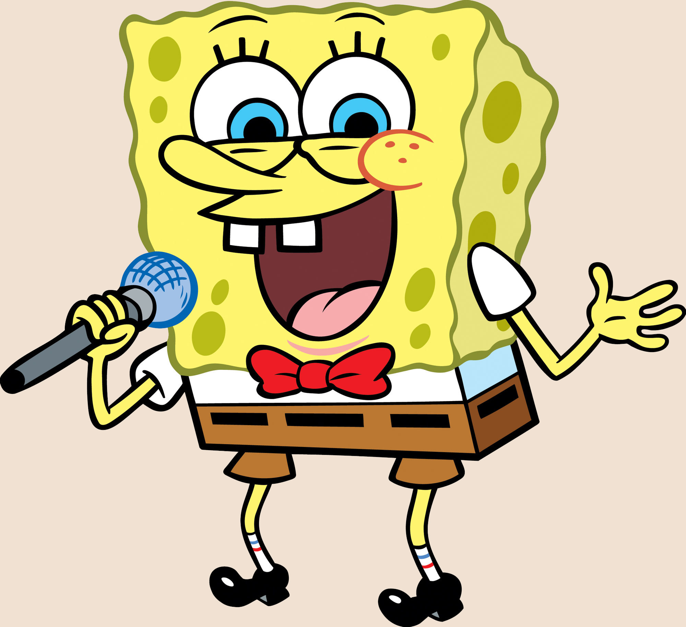

О сериале
«Губка Боб Квадратные Штаны», также известный как «Спанч Боб Сквэр Пэнтс» (англ. SpongeBob SquarePants), — американский мультипликационный сериал, который транслируется на телеканале «Nickelodeon». Появился в эфире 1 мая 1999 года и стал одной из самых популярных анимационных программ телевидения.
Персонажи
SpongeBob
Главный персонаж сериала. Любит свою работу поваром в Красти Крабс

Patrick
Лучший друг Губки Боба, морская звезда. Любит покушать

Squidward
Сосед Губки Боба. Очень любит тишину и спокойствие
Gary
Домашний питомец Губки Боба. Мяукает. Много ест
Eugene H. Krabs
Работадатель Губки Боба. Хозяин кафе "Красти Крабс"

Sandy Cheeks
Белка-учёная из Техаса, которая поселилась под водой, чтобы заниматься исследованиями морской фауны
Смотреть все серии онлайн
"Конкурент" Красти Крабса
Принадлежит Шелдону Джею Планктону - конкуренту Юджина Крабса. Однако, "Чам Баккет" по сути не может конкурировать с рестораном "Красти Краб", потому что в нём продаётся не очень то вкусная еда, в основном это так называемый "Чам", который, если верить мультсериалу, сделан из отходов. Чам Баккет евляется как домом Планктону, а для жителей Бикини Боттом жалкая помойка, где Планктон их травит своим чамом.